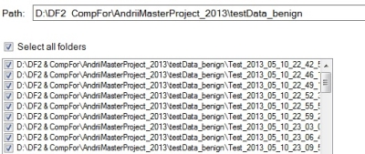
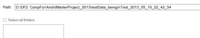
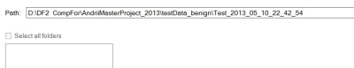

It should be noted that this program only works on SQLite databases, with the main focus being on Android devices. A pre-requisite is therefore that an image is created and databases are extracted from the image before a search can be initialized.
The first thing you need to do is the select the root/parent folder of the extracted databases. By this I mean that the extracted databases is contained in the subfolders of the selected root/parent folder. This is so that one has the ability to select multiple folders at once if needed.
Note!
A search cannot be initiated if you select the folder containing the database(s). Examples of right and wrong folder selection is displayed below:

Parent folder selected with subfolders containing SQLite databases.

No folders were listed since the database folder was selected.
Parent folder selected with subfolders containing SQLite databases.

No folders were listed since the database folder was selected.
<Current version 1.0.0.0>